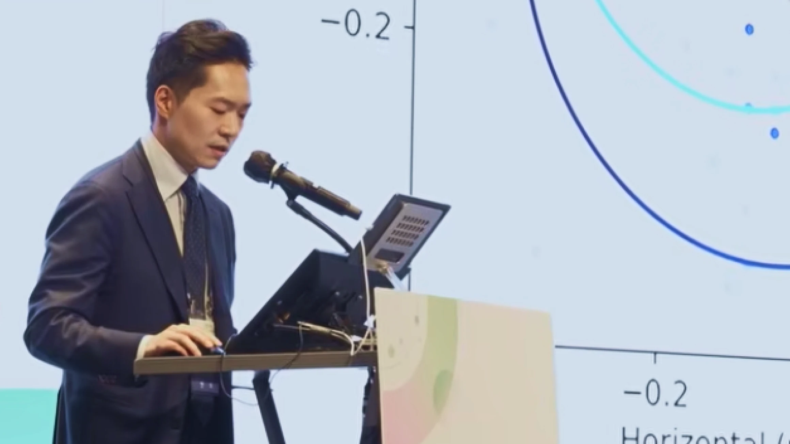
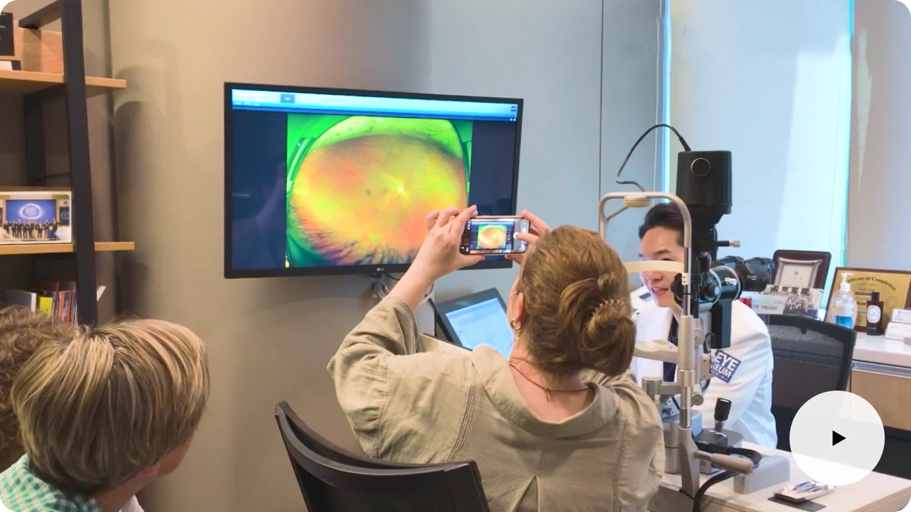
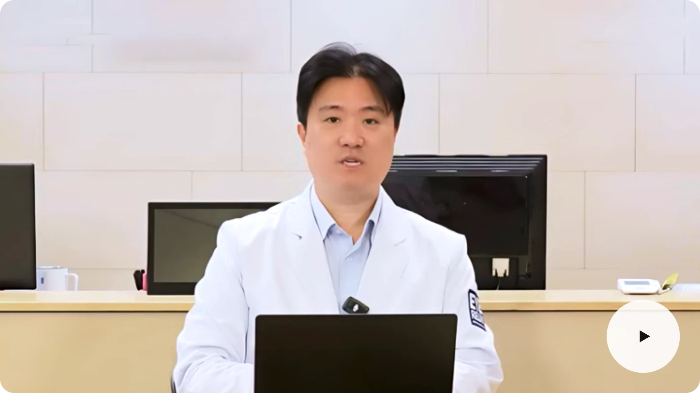
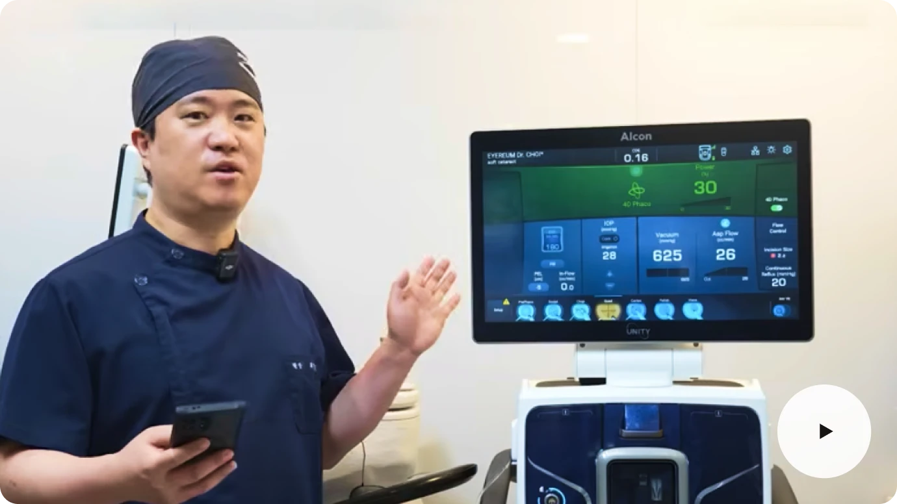
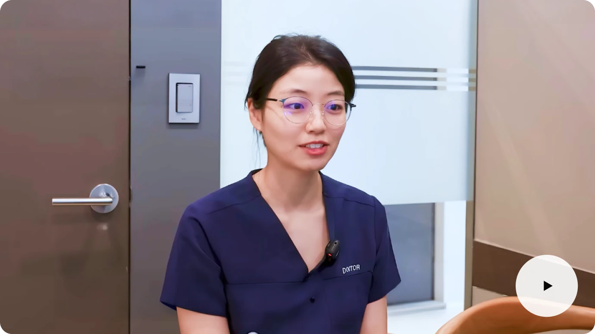
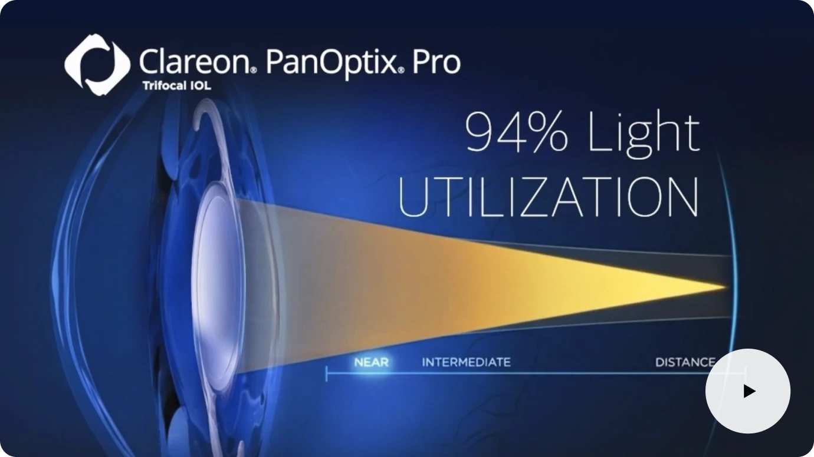
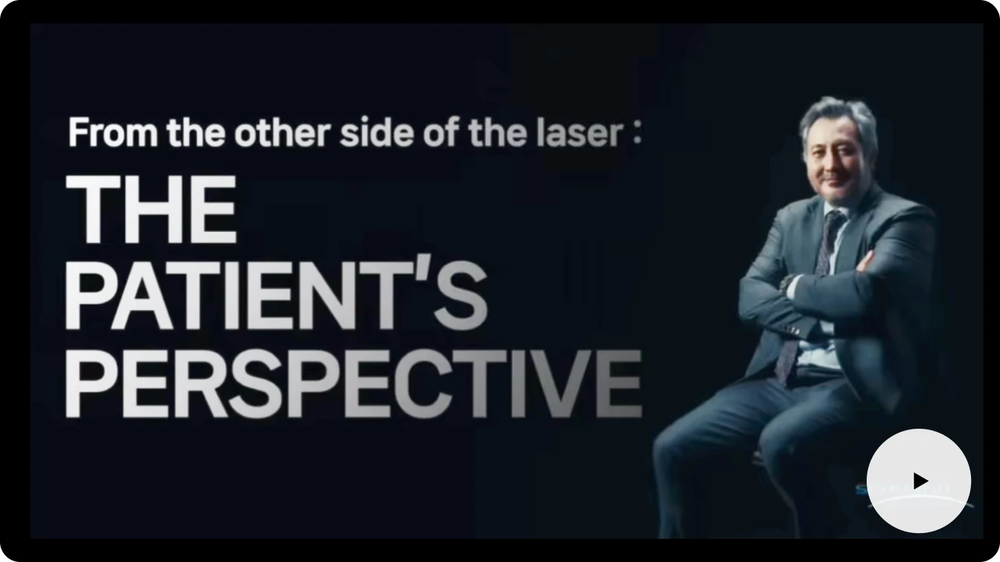

안과의사가 직접 받은 수술 이야기부터 생생한 환자 인터뷰까지, 시력 그 이상의 가치를 설계하는 아이리움만의 진정성을 만나보세요.

아이리움안과 강성용 원장이 공동저자로 참여한 정밀 시력교정술 연구가 지난 5월 열린 2026 ARVO Annual Meeting에서 발표됐으며, 해당 연구 초록이 IOVS 2026년 6월 ARVO Abstracts Issue에 게재됐습니다.





